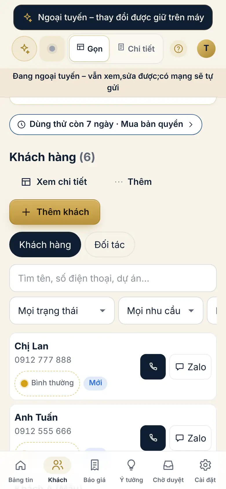
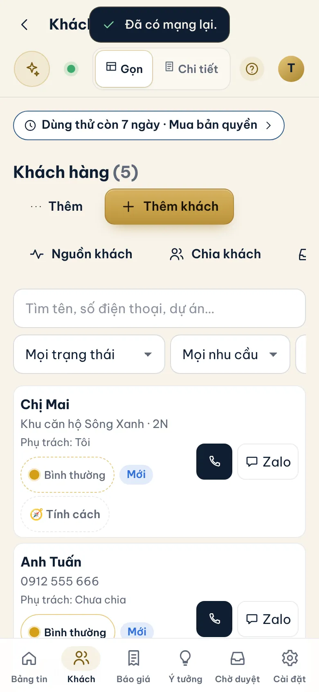

Mất mạng
App vẫn chạy khi mất mạng. Thay đổi được giữ trên máy và tự gửi lên máy chủ khi có mạng lại.
- Mất mạng: app báo "Đang ngoại tuyến – vẫn xem và sửa được, thay đổi giữ trên máy và tự gửi khi có mạng." Đầu màn có dải vàng Đang ngoại tuyến, chấm đồng bộ chuyển xám.
- Cứ xem khách, thêm khách, ghi chú như thường.
- Bấm vào chấm đồng bộ (cạnh nút ✨ ở đầu màn) để xem tình trạng: "Ngoại tuyến – thay đổi được giữ trên máy".

- Có mạng lại: app báo "Đã có mạng lại." (còn thay đổi chưa gửi thì kèm "– đang gửi … thay đổi lên máy chủ"). Chấm đồng bộ xanh lại, ghi Đã đồng bộ · giờ.

Lưu ý:
- Đừng đăng xuất khi còn thay đổi chưa gửi – đăng xuất xoá hàng đợi trên máy (app sẽ cảnh báo số thay đổi chưa gửi).
- Việc cần máy chủ hoặc AI (gửi lời mời, mua bản quyền, AI soạn tin…) phải chờ có mạng.
Không vào được máy chủ (nhà mạng chặn, mạng yếu)
- Mở app mà không tới được máy chủ nhưng vẫn còn phiên đăng nhập: app vào thẳng dữ liệu trên máy, đầu màn có băng rôn báo chưa nối được máy chủ. App tự thử nối lại mỗi phút; nối được thì băng rôn chuyển xanh và tự gửi thay đổi.
- Màn đăng nhập hiện từng bước (hỏi máy chủ, kiểm mật khẩu, đăng nhập) kèm số giây, không treo. Lỗi mạng thì có nút Thử lại và Chẩn đoán.
- Chẩn đoán kết nối (ở màn đăng nhập, hoặc Cài đặt › Kết nối gọn › Chẩn đoán): kiểm 3 bước – mạng của máy, tới được app, tới được máy chủ Google – rồi gợi ý cách sửa (đổi Wi-Fi/4G, tắt DNS riêng/iCloud Private Relay…). Bấm Chép kết quả để gửi cho người hỗ trợ (địa chỉ máy chủ đã được che).
- Mở dữ liệu đã lưu (chỉ đọc): máy đã đăng nhập đầy đủ trước đó và đồng bộ trong vòng 12 giờ thì xem được khách, lịch, ghi chú bằng mật khẩu của anh/chị (kiểm ngay trên máy). Chế độ này chỉ xem – không sửa, không gửi, không dùng AI. Sai mật khẩu 5 lần khoá tạm 15 phút.
- Không mở được dữ liệu đã lưu khi: máy chưa từng đăng nhập, dữ liệu cũ quá 12 giờ, tài khoản bật xác thực 2 lớp mà máy chưa được tin, hoặc tài khoản vừa đăng nhập ở máy khác (mỗi tài khoản 1 máy tính + 1 điện thoại) – khi đó cần có mạng để đăng nhập lại.